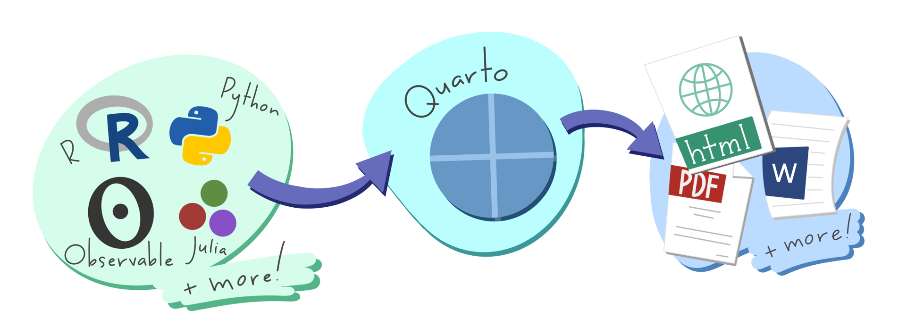
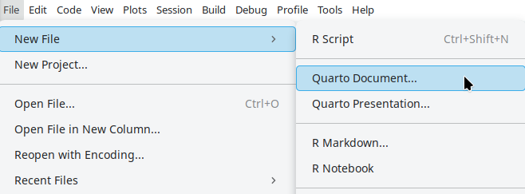
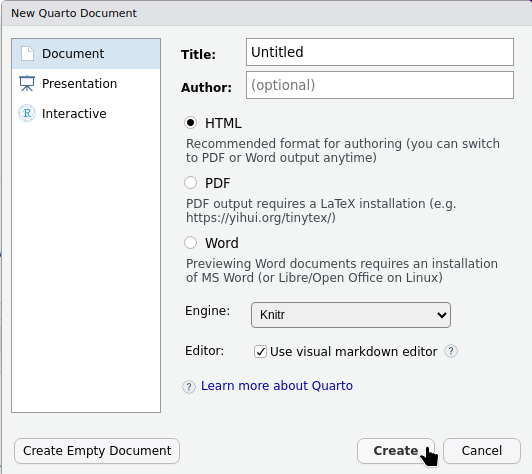
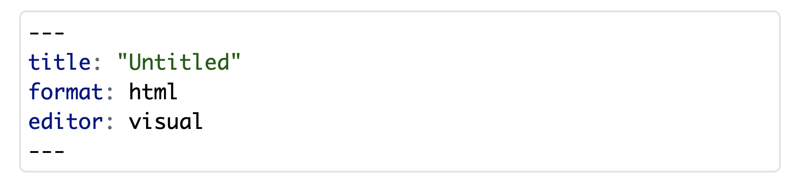
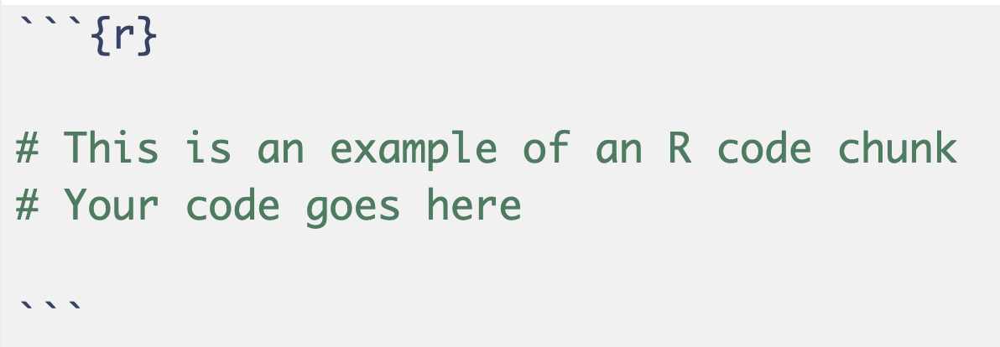
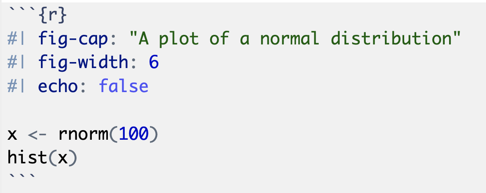
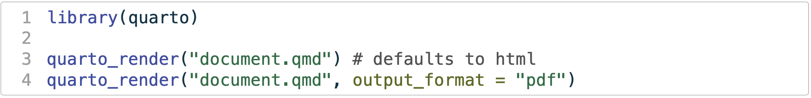
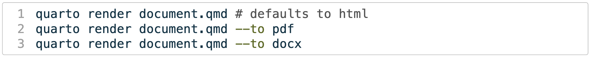

What is Quarto?
Quarto is a free, open-source system that helps you create interactive and reproducible documents easily.
Literate programming combines code and documentation in a single, readable document. Before delving into the basics of Quarto, it may be worthwhile to know the brief history of its predecessors.
Sweave
Sweave was one of the first tools for literate programming in R, allowing users to embed R code in LaTeX documents, combining R’s statistical power with LaTeX’s typesetting.
R Markdown
R Markdown is a modern alternative to Sweave, enabling the integration of text and R code in various output formats like HTML, PDF, and Word, not just LaTeX.
Quarto
Which leads us to Quarto, a new system that enhances the R Markdown ecosystem. Quarto provides a seamless framework for integrating code, text, and visualisations into a single, interactive, and reproducible document.
Quarto Fundamentals

Quarto provides a seamless framework for integrating code, text, and visualisations into a single, interactive, and reproducible document. Written in Markdown, Quarto is easy to learn yet powerful enough for complex document creation.
Quarto is not only limited to R code chunks, and you can also use Python, Julia, and SQL code chunks in your Quarto documents.
Despite the name, R Markdown also allows you to write documents containing code from many programming languages. The difference is that R Markdown requires rendering (‘knitting’) with R, while Quarto doesn’t!
Quarto also provides a range of built-in templates that you can use to create documents for different purposes, such as academic papers, presentations, and websites. These templates make it easy to get started with Quarto and create professional-looking documents with minimal effort.
Setting Up Quarto
If you’re using a recent version of RStudio, Quarto will already be installed and ready for you to use. If you have trouble rendering documents, you may need to install or update Quarto - detailed instructions for this can be found here.
Once you have installed Quarto, you can create a new Quarto document by:
Go to the File menu in RStudio
Select New
File>New File>Quarto Document

- Choose the document type:
Document,Presentation, orInteractive.

A Quarto file is a plain text file with the extension .qmd.
Now that you’ve got your first quarto document up and ready, let’s explore some key components! These include:
A YAML header
Chunks of R code
Markdown text
YAML
When you open up your first quarto document, you will notice a block of text up the top that looks something like this:

This is the YAML header, which contains metadata about your document, including the title, author, and editor. It allows you to edit the document’s title (currently “Untitled”), specifies that the output will be in HTML format, and indicates that the document will open in the visual editor by default.
RStudio v1.4 or higher includes Visual Markdown editing. Instead of markdown syntax (e.g., bolding with double asterisks), you can format text, add images and insert tables using a toolbar or keyboard commands, similar to a word processor. View sections 28.3 and 28.4 for more detail.
Beyond the basics, you can add some real handy components to the YAML
| author | For assignments especially, its good to include your name and potentially student ID with this section in the YAML. |
| subtitle | For reports it may be nice to add a subtitle for further detail. |
| toc | A table of contents can be a useful tool in structuring your document. toc-depth specifies the level of headings to include (e.g. toc-depth: 2 includes the top-level headings and second-level headings in the toc.) |
| date | If you’d like to include the due date or publishing date of the report. |
The structure of a YAML is very particular about indentation, and errors may occur if it is not formatted correctly. If you encounter cryptic error messages about keywords in your YAML then it’s worth checking the spacing of items carefully. A useful starting point is Quarto’s getting started documentation.
R Code Chunks
Code chunks refer to sections in the document where you can write and execute code. These chunks are enclosed by three backticks followed by the name of the language you are using (e.g., r for R code). Code chunks can be included in three ways:
Keyboard commands: Ctrl-Alt-ICtrl-Alt-I (Windows) or Cmd-Option-ICmd-Option-I (Mac)
Clicking the
Insertbutton in the toolbar (top right):
- Typing the code chunk manually:

Write the code you want to include within the chunk and when you run it, the output will be displayed directly below the chunk!
Code doesn’t have to be in a chunk! You can also embed the results of code within paragraphs using include code chunks, it looks like this:
The approximate value of $\pi$ is `{r} pi`:The approximate value of \(\pi\) is 3.1415927
You can also add options to the code chunk to control how the code is executed and displayed. For example, you can specify the output format, the width and height of plots, and whether the code should be displayed in the output.

Look at the image of the code chunk above, you can see that the chunk has the following options:
fig-cap: This option allows you to add a caption to the figure.
fig-width: This option specifies the width of the figure.
echo: This option controls whether the code in the chunk is displayed in the output.
These are only a couple examples of options for chunk options, and there are many more available. You can find a full list of chunk options in section 28.5.2 as well as further discussion in Communicating with Quarto.
Markdown text
In a Quarto document, you can write text using Markdown syntax. Markdown is a lightweight markup language that allows you to format text using simple and intuitive syntax. You can use Markdown to create headings, lists, links, images, and more.
Headings
Headings are created using the # symbol followed by the heading text. The number of # symbols indicates the level of the heading. For example, # creates a first-level heading, ## creates a second-level heading, and so on.
Text Formatting
Just like in any other word processors, you can also format your text. Here are some examples:
- Bold:
**bold**or__bold__ - Italic:
*italic*or_italic_ Strikethrough:~~strikethrough~~Code:`code`
Lists
Unordered lists can be created using * or -, with indentation used to indent list items.
Numbered lists can be created with 1., 2., and so on.
You can also create checklists by using - [ ] for an empty box and - [x] for a checked box.
Rendering Your Document
Once you have written your document, you can render it to see the output. To render your document you can:
- click the
Renderbutton in the toolbar - use the keyboard shortcut
Ctrl + Shift + K(Windows) orCmd + Shift + K(Mac) - run the
quarto::render()function in the console

- In the Terminal via
quarto render:

When you render your document, Quarto will execute the code chunks and generate the output. The output will be displayed in the Viewer pane in RStudio, and you can also view the output in a web browser by clicking cog icon next to Render and ticking the Preview in window box.
Additional Resources
These are the more basic of the quarto markdown syntax. For more on how to communicate with quarto, refer to Communicating with Quarto. Additionally, the following resources may be helpful: